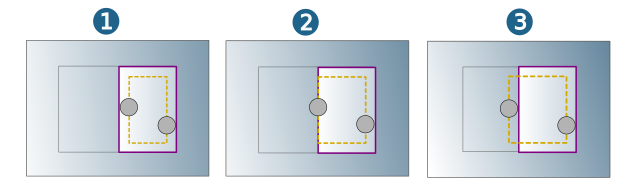

Boundary
Mode
Limit the machining area in the horizontal direction either in Curve selection mode by defining a boundary or in Surface selection mode by selecting surfaces whose outer boundary curves can be used.
|
Boundaries: Closed curves can be used as boundaries, for example, Polylines (2D/3D), Splines, Circles. The Z-position of the boundary is not considered during calculation of the machining area. 3D curves are projected into the XY plane. |
|
|
Surfaces: Select surfaces to create boundaries in the machining area quickly and efficiently. In this mode, an Offset of the same or greater size than the tool diameter must be defined. |


Note
If the High Performance Modus is used, the tool may leave the Boundary for linking movements. For machining processes, that require protection of the Fixture, the Avoid surface function can be used.
Tool reference
Define the machining area with reference to the boundary curve.
Toward (1): Machining ends as soon as there is contact between the tool shank and the boundary (1).
On (2): Machining until the tool axis is on top of the boundary.
Past (3): The tool axis leaves the boundary. Machining ends as soon as there is no longer contact between the tool shank and the boundary.
|  |
Plunge points: If necessary, define the start of machining by specifying plunge points.
User-defined plunge points are also available for High Performance Mode.
Requirements: A corresponding hole must be present in the stock for the plunge point used.
The distance between the plunge point and the model wall must also correspond to at least 2x tool diameter. If plunge is possible at the defined point, the plunge point is approached directly without a macro. If plunge is not possible at the defined point, machining is carried out without a plunge point. If approach from the outside is possible, the plunge point may perhaps not be used.
Specify the pilot hole diameter with the drill diameter . The value must be at least 1.25* tool diameter and 1.1* tool diameter + 4* stock tolerance.
Specify the pilot hole angle with the hole angle.This corresponds to the tip angle of the tool being used.
Avoid areas
Select surfaces that are not to be machined from the tool axis perspective.
You can also define an Allowance and an Axial allowance where both must be greater or equal to 0. The values are added to the allowances defined on the Parameters tab.
Minimal stock removal
Axial (Z) / Side (XY): Minimal material width between stock and model in axial or lateral direction. Recommendation for Axial (Z): The value should be greater than the vertical stepdown of the reference job.
Note
Used only for the calculation and generation of the rest material areas. Prevents very short toolpaths in narrow areas.
Boundaries rest material areas
Write boundaries rest material: Activate if rest material areas are to be displayed as limitation contours in the graphical preview. To this end, use the Import rest material areas boundaries function in the shortcut menu of the job after calculating the toolpath.
Color: Specify a color for the boundary.
Collision boundaries
Write collision boundaries: Activate if areas where collisions with the tool holder or tool shank were identified are to be displayed as limitation contours in the graphical preview. For this purpose, use the Import collision boundaries function on the shortcut menu of the job after calculating the toolpath.
Color: Specify a color for the boundary.
Note
The Boundaries rest material areas and Collision boundaries functions are not available for hyperMILL for SOLIDWORKS and hyperMILL for Autodesk® Inventor®.